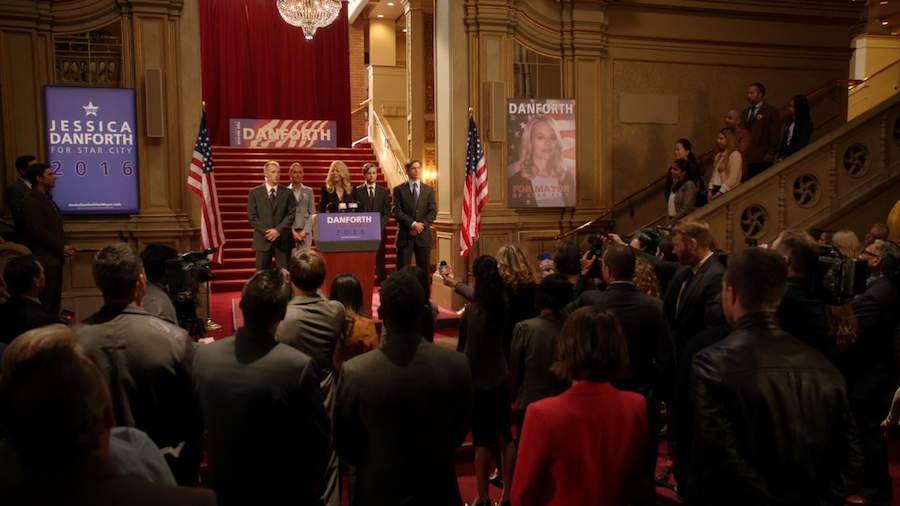

Arrow S04|E02 The Candidate
This episode of Arrow was notable for introducing no less than four new characters into the mix. The season is certainly off to an eventful start. And on the whole, “The Candidate” was a solid sophomore episode, though wildly inconsistent when it came to its handling of those new characters.
The biggest new additions this week were Curtis Holt (Echo Kellum) and Lonnie Machin (Alexander Calvert). Assuming this show follows the source material, both men are destined to become costumed vigilantes down the road. However, it appears the show will be taking the slow and steady approach in building towards the debuts of Mister Terrific and Anarky. Which is probably a good thing. Especially when it comes to the lesser villains, this show is all too eager to rush.
Kellum definitely impressed as Holt. He made for an entertaining foil to Felicity, essentially by being the male version of Felicity circa-Season 1. He’s every bit as stuttery and awkward as she once was (and sometimes still is), to the point where Felicity had to remind Michael that she’s the only one allowed to talk like that. These two look to make a strong team. And the offhand reference to Michael’s husband ensures that there won’t be any pointless romantic tension between them.
What I liked most about Felicity’s storyline this week is that it truly was her storyline. By placing her as the new head of Palmer Technologies, Felicity has finally come into her own. She’s no longer a supporting character defined by her relationships to men like Ollie and Ray. She faces her own struggle completely independent from what Team Arrow are currently dealing. This seems like a really promising evolution for her.
As for Lonnie/Anarky, he was a bit trickier. This is one case where I’d have no problem with the character if he was an original creation and not using the name of an iconic DC villain. Lonnie was twisted and charismatic in a way that contrasted nicely with Damien Darhk’s more controlled and orderly breed of villainy. Plus, he put up a damned good fight in that final showdown with Ollie and Thea. No arrows there, just some good, hard-hitting martial arts (and an electrified staff, to boot).
The problem is that this was Anarky in name only. In the comics, Anarky is a teen with arguably noble intentions. He’s obsessed not with the sadistic, bloodthirsty brand of anarchy we saw in this episode, but the sort of anarchy that rallies the common people and brings down corrupt governments and organizations. He’s not even supposed to be a villain so much as a misguided kid with delusions of grandeur.
Where was any of that in this portrayal of Lonnie? This character was a pure sadist absent of any sort of moral code. And again, I would have had no problem with Lonnie if he was an original creation rather than borrowing the name of a fundamentally different character. He had great screen presence, and he helped flesh out define what sort of person Darhk is. Even he has rules and limits, though he doesn't seem to mind using innocent people as collateral.
This episode also introduced Star Trek: Voyager’s Jeri Ryan as Queen family friend/mayoral hopeful Jessica Danforth (who is actually an original creation for the show). It’s always nice to see Ryan pop up, regardless of the role. She did a fine job with the material she was given, transforming from idealistic leader to despondent mother in a convincing fashion. Unfortunately, this episode didn’t give her anything more to work with. It was disappointing to realize that Jessica’s traumatic experience was merely a means to an end as far as convincing Ollie to throw his hat into the political ring. It seems like a waste of Ryan’s talent and star power, honestly. Hopefully there’s more planned for her character this season.
But if nothing else, it’s intriguing to see such a big new development in Ollie’s life. The “Oliver Queen as mayor” angle certainly has its basis in the comics. And it’s a natural progression given what the Queen family has suffered and Ollie’s own struggle to defend and inspire his city in ways the Green Arrow can’t. It’s a key step in transforming him into a man of the people.
As for Thea, I’m still not thrilled with her subplot. It makes sense given the nature of the Lazarus Pit that she’d be experiencing some psychological issues. However, this particular conflict feels way too similar to what Roy underwent after his exposure to the Mirakuru in Season 2. It doesn’t help that Willa Holland’s performance fell flat whenever Thea launched into rage mode. Still, the idea of Thea and Laurel taking a road trip to Nanda Parbat has definite potential. Hopefully that’ll nip Thea’s current problem in the bud and set her up for a more compelling conflict instead.
Finally, this episode also introduced Jimmy Akingbola as Baron Reiter in the flashbacks. Reiter is apparently meant to be an adaptation of the villain Baron Blitzkrieg, though at first glance he seems to have even less in common with that comic character than this version of Lonnie Machin has with Anarky. But ignoring the source material again, Reiter seems like a perfectly decent warlord villain (apart from his inexplicable willingness to accept Ollie into his militia). The flashbacks continue to be really fascinating in just how much they contrast the Oliver Queen of today with the Ollie of five years ago. I just hope the return to the island doesn’t result in a retread of the first two seasons.
Next weeks episode preview: